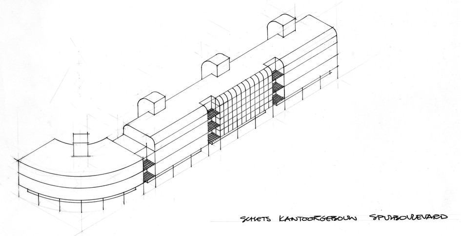
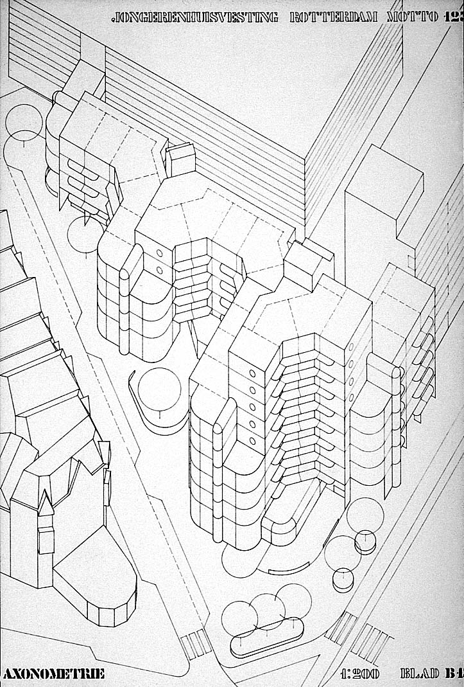
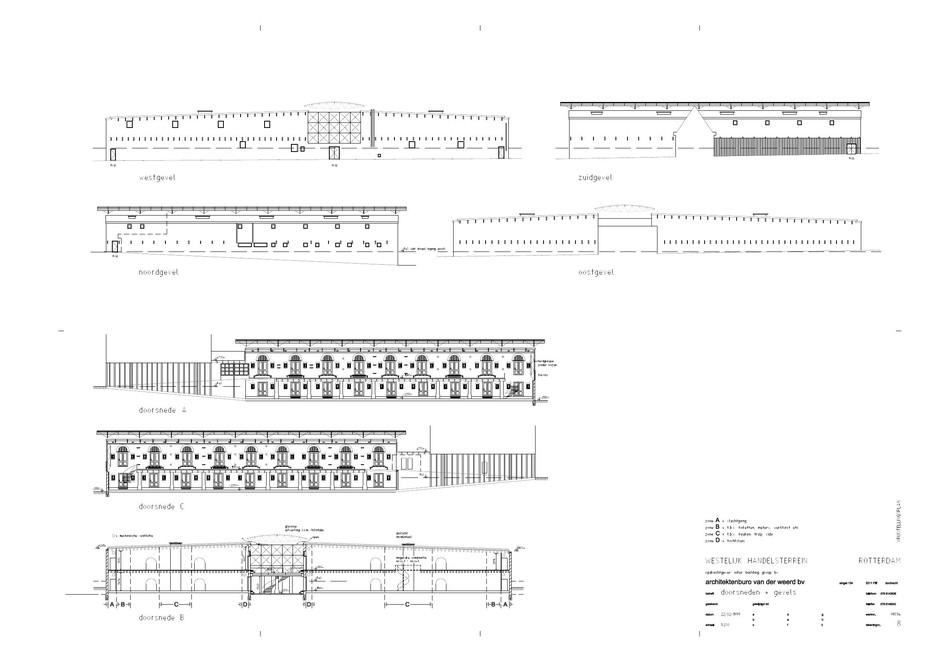
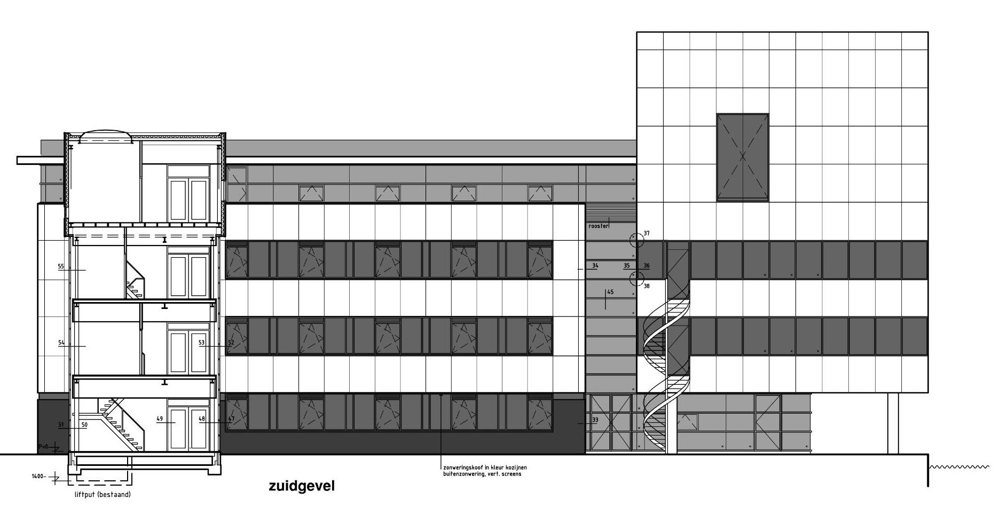

Projecten worden geleidelijk toegevoegd.
©1966-2024 Archief Jan van der Weerd. Alle rechten voorbehouden. Reproductie of gebruik van beeldmateriaal uitsluitend na voorafgaande schriftelijke toestemming.
Project index
Crawlable overview of the archive. Each item links to the interactive project view below.

TU Delft studie - Roeipaviljoen

TU Delft studie - Stationsgebieden Delft en Leiden-Noord

Sterrenburg 3, Dordrecht - Stedenbouw
Dit project betreft een uitbreiding aan de zuidrand van Dordrecht met een capaciteit van 4000 woningen. Door Atelier A architecten (Herman Haan, Jan van der Weerd) zijn 3 deelplannen ontworpen, met daarin 145 woningen laagbouw (premie), 128 patiowoningen (vrije sector), 136 woningen middelhoogbouw (premie), 180 woningen hoogbouw (premie). Bouwjaar 1976.

Sterrenburg 3, Dordrecht - E7 Patiowoningen

Sterrenburg 3, Dordrecht - M5 Terraswoningen
De gestapelde woningen zijn gesitueerd langs de wijkverzamelwegen, met het doel om het verkeer zoveel mogelijk uit de woonbuurt te houden en als ruimtelijk structurerend element in de wijk. De toegangen van de woningen zijn zoveel mogelijk geconcentreerd op de eerste verdieping, waardoor een voetgangersniveau ontstaat dat meer betekenis heeft dan een galerij. Dit voetgangersniveau verbindt de blokken onderling en de overige etagebouw in de verschillende deelplannen, waarbij een verkeersvrije oversteek over de wijkverzamelweg beschikbaar is. De terrasserende opbouw van het blok, gecombineerd met een naar de einden aflopende bouwhoogte, maakt het mogelijk de etagewoningen te integreren met de omringende laagbouw. Het vormt a.h.w. een verheviging van de bebouwing, zonder zich te verzelfstandigen t.o.v. de omgeving. Dit effect is nog versterkt door de materiaal- en kleurtoepassing, die aansluit bij een deel van de laagbouwwoningen. Het parkeren is half verdiept ondergebracht onder de bebouwing, waarmee wordt verhinderd dat de woonomgeving wordt gedomineerd door auto's. Uitgangspunt bij het ontwerp van de woningen was dat ook etagebouw zou moeten zijn voorzien van een bruikbare buitenruimte. Deze is aanwezig in de vorm van een halfoverdekt terras (buitenkamer)

Sterrenburg 3, Dordrecht - H1 Hoogbouw
De hoogbouw is gesitueerd in het centrum van de wijk, nabij het centrale plein en het winkelcentrum, en vormt zodoende een ruimtelijk accent. Wat is vermeld over de terraswoningen geldt eveneens voor de hoogbouw; in feite vormt deze een verbijzondering van de middelhoogbouw. De eerste 4 bouwlagen zijn identiek en daarbij zijn de bouwblokken zo geplaatst dat op het knooppunt kon worden verdergebouwd tot 9 verdiepingen. Door de piramidale opbouw ontstaat in het hart een inpandige ruimte, welke wordt benut voor gemeenschappelijke voorzieningen. Het parkeren vindt ook hier onder het gebouw plaats.

Woningbouw, Willemstad

ABN Amro, Dordrecht

Kantoorgebouw Spuiboulevard, Dordrecht

Jongerenhuisvesting Kruisplein, Rotterdam
Het plan vormt de inzending voor een prijsvraag, georganiseerd door Stichting Volkswoningen en de projektgroep Het Oude Westen te Rotterdam. De opgave bestond uit het ontwerpen van een wooncomplex aan het Kruisplein hoek Diergaardesingel met als bijzonderheid dat daarin huisvesting voor jongeren in verschillende woninggrootten en met verschillende mate van gemeenschappelijkheid gerealiseerd moest worden. Bovendien werd een grote mate van veranderbaarheid gevraagd, in die zin dat het mogelijk moest zijn de kleinere woningtypen samen te voegen tot grotere en omgekeerd. Het plan bestaat uit geschakelde blokken van 3 tot 9 bouwlagen, in de vorm van een in elkaar gevouwen strokenverkaveling. Door deze opzet treedt een schaalverschuiving op van Kruisplein naar Diergaarde-singel. Hierbij vormt het hoogste bouwblok een ruimtelijke begrenzing van het Kruisplein en ontstaan er in de straat enkele verwijdingen in de vorm van openbare ruimten. De twee trappehuizen geven toegang tot galerijen aan de noordzijde, die waar de stroken elkaar ontmoeten overgaan in een binnengang. Aan de koppen van de blokken zijn steeds de, ook van buiten herkenbare, gemeenschappelijke ruimten gesitueerd. Op de begane grond bevinden zich naast parkeervoorzieningen en enkele winkels nog ruimten voor lokale voorzieningen. De prijsvraag werd niet gewonnen maar gegund aan het bureau Mecanoo (zie vergelijking in laatste foto, projectlink hieronder).

Westelijk Handelsterrein, Rotterdam
Dakconstructie door Octatube bv / Mick Eeckhout

NLR, Amsterdam,Tower Research Simulator (TRS/NARSIM)
Uitbreiding van de hoofdvestiging van het Nationaal Lucht- en Ruimtevaartlaboratorium (oorspronkelijk ontwerp van Hugh Maaskant) aan de Anthony Fokkerweg 2 in Amsterdam met het Tower Research Simulator (TRS) gebouw waar de NLR Air Traffic Control Research Simulator (NARSIM) in gehuisvest.

Westerstraat Rotterdam